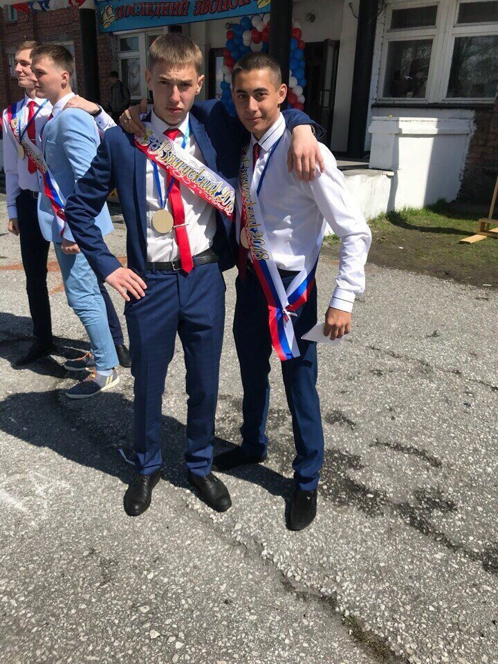

О себе
Я, Данилов Кирилл Андреевич, родился 14 сентября 2000г. в городе Слюдяка, этот небольшой городок расположен на берегу крепнейшего озера Байкал. В данный момент я являюсь студентом 3го курса Иркутского Национального Технического Университета. Обучаюсь на такую специальность как "Программист". С первого класса, а это с 7лет я профессионально занимаюсь хоккеем. В данный момент представляю команду ИРНИТУ и параллельно представляю команду своего Слюдянского района. Я очень трудолюбивый и люблю узнавать что то, интересное.Люблю читать книги.Мне нравятся горы. В 2020г я побывал в таких местах как "Шумак", взошел на "Пик Черского", это был самый долгий мой поход, я пробыл в горах около двух недель,за это время мы обошли 8 водопадов, 2 озера(Оз.Сердце и оз.Мертвое, которое расположенно почти с границей Монголии.).Есздил на Аршан, там мы с друзьями ходили на Пик"Любви", кстати, очень интересное место всем рекомендую там побывать, тропа не сложная,какждый из вас может подняться и насытиться свежим воздухом и класивыми пейзажами. В планах на 2021г Сходит на Эверест, это конечно очень трудный поход, к данному подходу нужно подойти с особой ответсвенностью, потому что дорого долгая, большие перегрузки, которые очень негативно влияют на здоровье человека.
